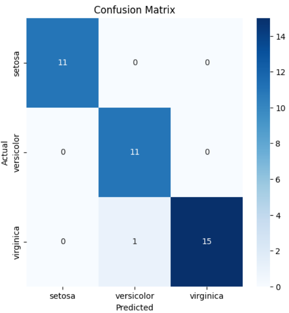
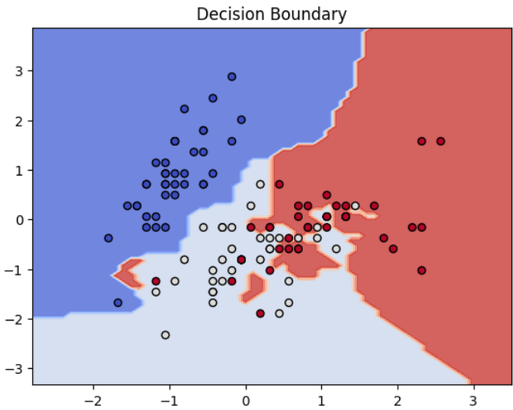

Varun Rao
Published on April 5, 2025
Understanding the Basic Architecture
In this deep dive, we'll explore KNNs from implementation to insights, where we check the where the k Nearest points lie in the Classification viewpoint.
Required Functions:
- euclideanDistance - for finding euclideanDistance
- getNeighbors - fin k nearest neighbours
- getResponse - predicts the class of test instance
- predict - Make predictions with trained model
The model for a specific point find its k near points and get the major voting and predict on basis of that (Regression or Classification).
Model Performance Visualization

Showing how much true positives and false positives are:

Displays the Decision boundaries for different classes.
Key Learnings and Challenges
- Lazy learner it doesn’t require a training phase..
- Non-ParametricYou doesn’t need to know anything about data distribution at all.
- Flexible with Distance Metrics Any Distance metric can be used afterall.
- High Computational Complexity As need to be calculated for each point afterall.
- Memory IntensiveAs it needs to store all data.
- Chosing of KModel heavily depends on K value.
Model Performance Metrics
Accuracy
97.37%